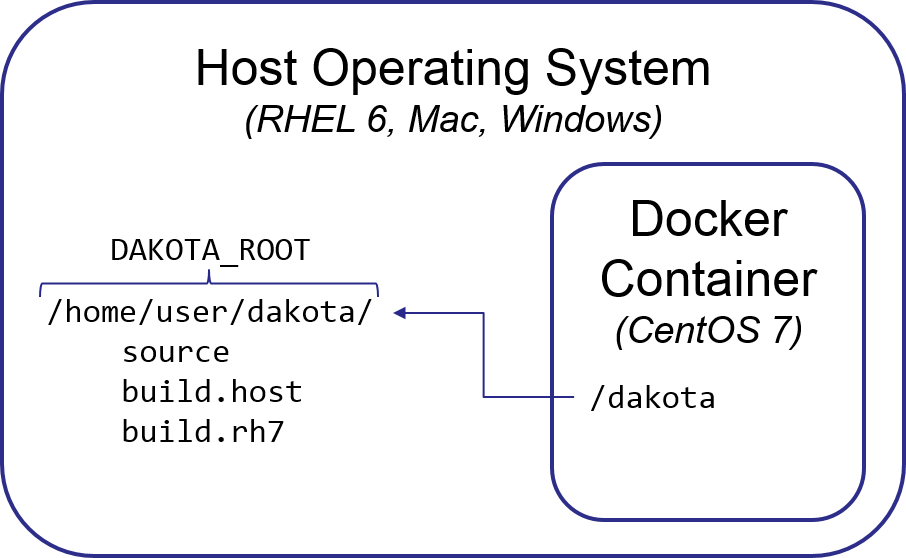

Setup Your Development Environment
RHEL 7 is the recommended Dakota development environment, as Dakota tests are baselined (primarily) to stock RHEL7 packages. SNL developers should see team documentation for access to RHEL 7 resources. For others who wish to develop on machines without RHEL 7 installed, it’s possible to develop using a native toolchain and then use the Docker-based build/test process before pushing to the devel branch (see below).
See Setup Development Environment for pointers on setting up a development environment on various platforms, and overall information on Compiling Dakota.
A typical developer CMake configuration of Dakota, e.g., on RHEL 7
includes the use of the DevDistro convenience option which enables
developer compiler options, documentation, and specification
maintenance and some typical features:
cmake \
-D DevDistro:BOOL=ON -D DAKOTA_HAVE_HDF5:BOOL=TRUE \
-D HAVE_QUESO:BOOL=ON -D DAKOTA_HAVE_GSL:BOOL=ON" \
-D DAKOTA_PYTHON:BOOL=TRUE -D DAKOTA_PYTHON_DIRECT_INTERFACE:BOOL=TRUE -D DAKOTA_PYTHON_DIRECT_INTERFACE_NUMPY:BOOL=TRUE -D DAKOTA_PYTHON_SURROGATES:BOOL=TRUE -DDAKOTA_PYTHON_WRAPPER:BOOL=TRUE \
../source
Typically on stock RHEL 7, the following are also necessary:
cmake3 \
<options from above>
-D JAVA_HOME:PATH=/usr/lib/jvm/java-11 \
-D Boost_NO_BOOST_CMAKE:BOOL=TRUE -D Boost_NO_SYSTEM_PATHS:BOOL=TRUE -D BOOST_INCLUDEDIR:PATH=/usr/include/boost169 -DBOOST_LIBRARYDIR:PATH=/usr/lib64/boost169
../source
Developing with Docker
Docker permits a complete RHEL 7 test environment to be encapsulated in an “image” that can run on an entirely different operating system, such as OS X, RHEL 6, or Windows. The system where the image is run is referred to as the host, and an instance of a running image is called a container.
For the most part, you will perform development as usual on your host machine, including cloning Dakota source and creating builds using, as appropriate, the SEMS modules or native build tools on your system. When you are ready to test against RHEL 7 baselines, you’ll need a separate build directory, e.g. build.rhel7. You’ll use the Docker container to build and test in this directory. You can then iteratively edit source files on the host and rebuild in the Docker session.
Install Docker
First, you’ll need to install docker on the host system, through the Hello World step.
On Mac, make sure to get version 17.04 or newer to help with filesystem performance issues.
For Dakota team members, see our Confluence site for some SNL and platform-specific hints.
Import Dakota Docker Image
Retrieve and load the Dakota Docker image (restricted access). Non-SNL developers can make their own Docker image using dakota/scripts/docker/rhel7-dev/Dockerfile. Perform the following steps as a regular user on the host system:
curl -O http://www.sandia.gov/~briadam/sandia_only/centos7-dakota.tar.gz
gunzip centos7-dakota.tar.gz
docker load --input centos7-dakota.tar
You may alternately use wget or manually download and extract the file. It is necessary to load the test environment image only once. The ‘docker images’ command shows a listing of loaded images and should now show an image called centos7-dakota.
You may optionally remove centos7-dakota.tar as it is no longer needed.
Setup Dakota Source and Build Directories
You can use your normal source directories on the host, adding a new build directory for RHEL 7. It is simplest if this build directory is peer to, or a subdirectory of the source folder. The following assumes all your Dakota-related files live in a directory ${HOME}/dakota, so you may need to adjust for other paths.
On the host OS, make sure you have a directory containing a Dakota checkout, e.g., ${HOME}/dakota/source
For convenience, define a convenience variable to point to the directory containing the source directory: export DAKOTA_ROOT=${HOME}/dakota
Make a new build folder to contain the RHEL 7 build, e.g., mkdir -p ${DAKOTA_ROOT}/build.rh7
So on your host you now should have something like
${HOME}/dakota/source # your normal source dir
${HOME}/dakota/build.host # your normal build dir
${HOME}/dakota/build.rh7 # your new, RHEL 7 build dir
Start Docker Instance
In this step, you’ll start an interactive terminal within an RHEL 7 Docker container and perform a build/test. First, start a Docker container:
# command args image name
# mode filesystem mapping forward your UID start a terminal
docker run -i -t -v ${DAKOTA_ROOT}:/dakota -e LOCAL_USER_ID=`id -u $USER` centos7-dakota /bin/bash
Mac filesystem performance: Synchronization of files between the Mac OS X host and the Docker guest can be painfully slow. Docker 17.04 and newer have OS X FS caching options to help. Assuming you will primarily do development in the host and build/test in the guest, consider the delegated option as this will delay synchronization from the guest back to your host, but ensure edits on the host immediately appear in the guest. If this doesn’t yield sufficiently good performance, consider using rsync or another method to copy files back and forth between host and guest.
docker run -i -t -v ${DAKOTA_ROOT}:/dakota:delegated -e LOCAL_USER_ID=`id -u $USER` centos7-dakota /bin/bash
Other file mappings (optional): The -v option makes a mount point within the container that refers to the host file system. Referring to the figure above, -v ${DAKOTA_ROOT}:/dakota causes the container’s directory /dakota to refer to the same files as ${DAKOTA_ROOT} on the host. You may prefer to mount other directories or refer to them differently in the container. For example, to mount your entire home directory so it appears at the same path in the container, you could instead use -v ${HOME}:${HOME}, which will mount the host’s ${HOME} on the same path in the container, e.g., /home/username. Note that for LDAP-enabled host systems, your home directory may be something like /ldap/users/username, so you may want to map that to a more helpful path, e.g., -v ${HOME}:/home/username.
Now, working in the container, configure and build Dakota using your normal preferred options, e.g.,
# Configure
cd /dakota/build.rh7
# With your usual options (cmake3 required for C++11 features)
cmake3 [options] ../source
# The DakotaDev option won't work as Doxygen and LaTeX aren't installed in the Docker image (TODO)
# The following will configure with settings similar to continuous integration testing:
cmake3 -DCMAKE_C_FLAGS:STRING="-O2" -DCMAKE_CXX_FLAGS:STRING="-O2" -DCMAKE_Fortran_FLAGS:STRING="-O2" \
-DDAKOTA_HAVE_MPI:BOOL=TRUE -DDAKOTA_HAVE_GSL:BOOL=TRUE -DHAVE_QUESO:BOOL=TRUE ../source
# Build
make -j 8
# Test
module load mpi
cd test
ctest -j 8 -L FastTest
make dakota-diffs
This will cause the build/test to take place directly in the host filesystem. When you exit the container, none of its state is preserved, but the build/test files will remain in the host filesystem, e.g., ${DAKOTA_ROOT}/build.rh7.
Limitations / Future Extensions
If performance on Mac remains problematic (this has improved as of 20170913) may need to sync files into the container (https://docs.docker.com/docker-for-mac/osxfs/#performance-issues-solutio…)
Docker container only has basic vi editor and is not currently setup for interactive development (current focus is on efficiency)
No debug tools installed